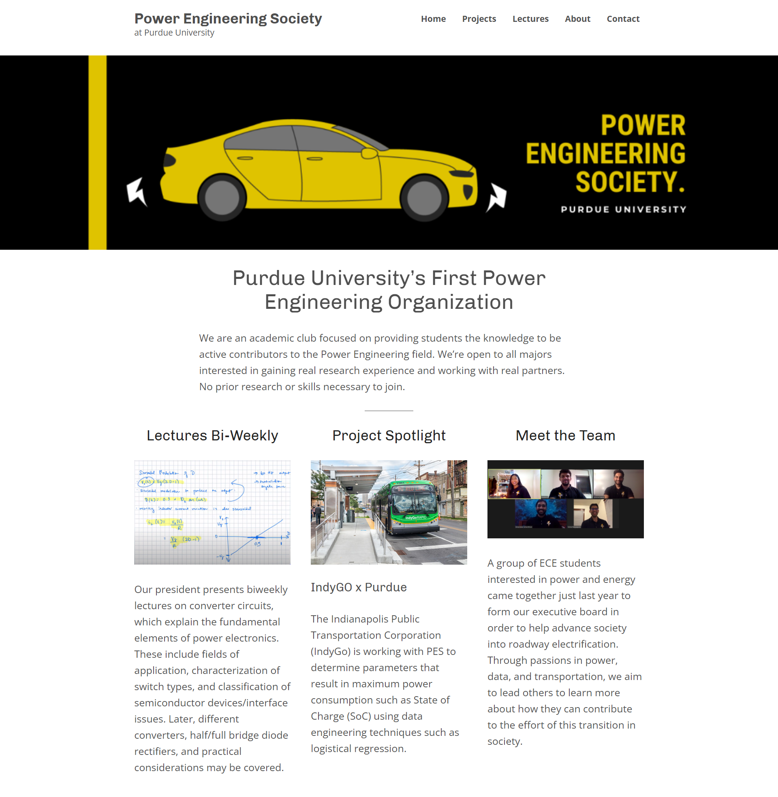
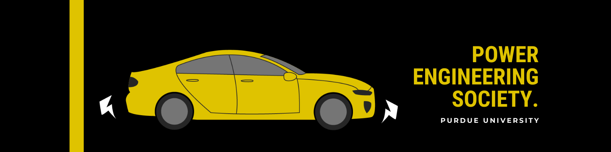

I redesigned and developed a website on WordPress.
Strategic, analytical, unapologetically bold
My Role
web designer
web developer
graphic designer
Project Duration
2‐3 weeks
Project Goal
To increase student membership of the Purdue Power Engineering Society
Overview
My website redesign versus the original website.
When I found out that an acquaintance of mine founded a new student organization on campus, I knew I had to take advantage of their member-recruiting efforts for project experience.
The leadership board of this new organization were all engineers with little to no design backgrounds, so they struggled to set up their own unique brand and marketing strategy. Not only could I provide these services to them, I would also be getting that project experience that I needed. I reached out to the founder and volunteered to redesign their website and any other elements of their brand we felt were necessary. Together, we established a list of objectives that would help the organization improve its brand appeal and increase publicity.
Objective 1: Create a Bold and Empowering Website That Is Easy to Edit and Low Cost
The organization needed a website that could be easily updated by anyone, even with little web development experience, so I chose WordPress to design and develop the website for its easy-to-learn user interface. I also used the free WordPress membership to avoid any costs. The free option was a difficult decision to make for the founder and I because we didn’t want the WordPress advertising all over the website, but the organization had a very low budget.
Another challenge I had with designing a website in WordPress was using a free template. Customization is very limited in the free templates, so I had to really get creative with what little tools were available to create a visually unique website design that best fits the brand objectives of the organization. I basically just chose a free website template and deleted about 95% of the pre-built elements to add and customize my own.
I wanted to pull most of the same elements from the original website into this redesign, but also add more content that would be more inviting for students to get involved. Specifically, a detailed about us page was needed to add faces to the name and lessen any intimidation. It was also a problem to fix that the original website did not have a navigation menu, which can typically cause negative experiences for users. Another frustrating element of the original design was the lack of any obvious call-to-actions or invitations for the user to explore further at the top of the website. I attempted to fix this by separating the website into multiple pages, and highlighting the main points of the organization on the homepage with clickable headings.
Objective 2: Create a Style Guide and Set of Graphics to Use Throughout Website and Posters
We felt that the organization's social media presence had great enthusiasm, but the visuals were lacking. I heavily focused on the wants and needs of the founder with her vision of the Power Engineering Society organization, using big, bold headings and Purdue-esque colors like black, white, and a rich gold. Below is the banner I created that is shown on both the website and the Power Engineering Society LinkedIn page.
Results
In the end, the organization experienced a 25% increase in student membership within the first two months of the website completion. I also consequently accepted the organization's invitation to serve as their brand director for the 2021-2022 school year.
HTML/CSS
WordPress
Photoshop
Illustrator
web development
responsive design
strategic web designing
working with client
marketing